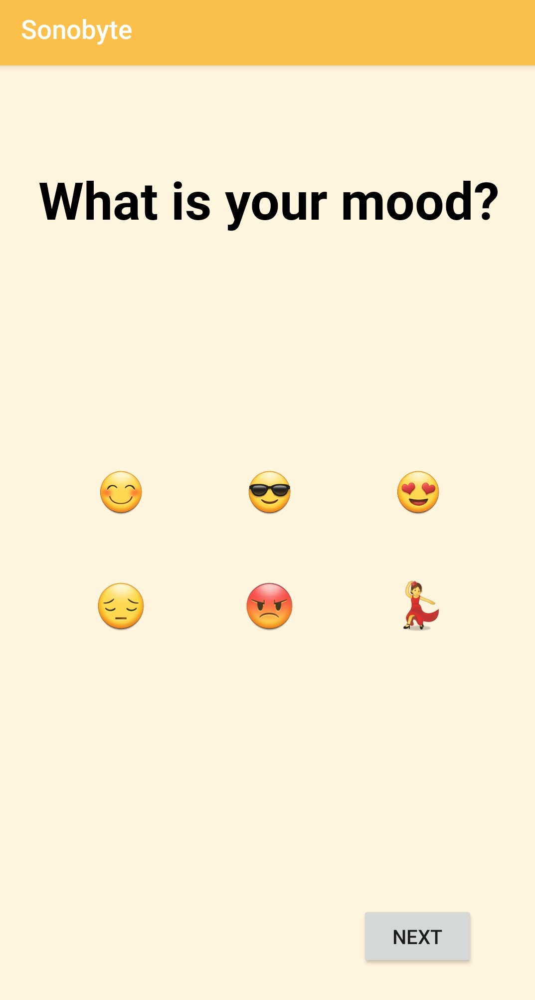
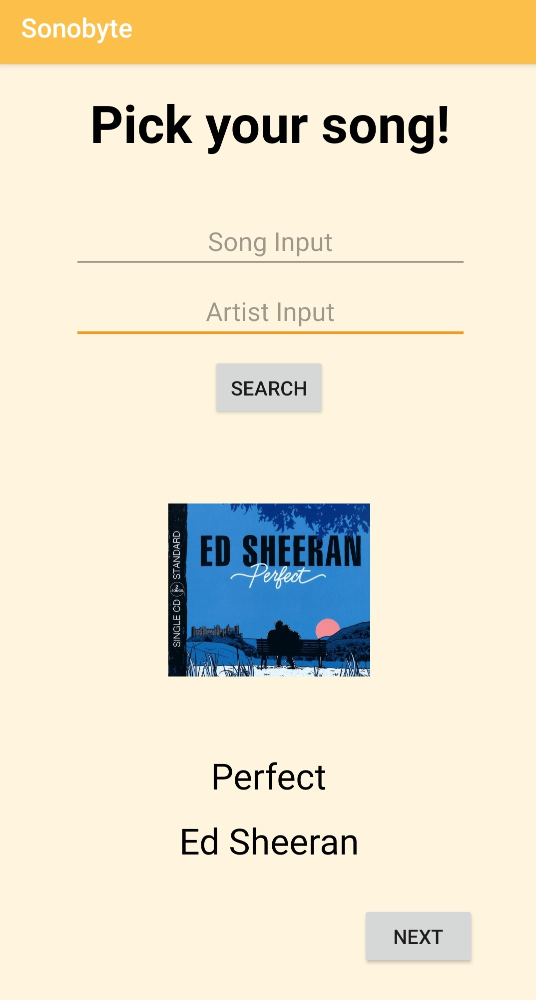
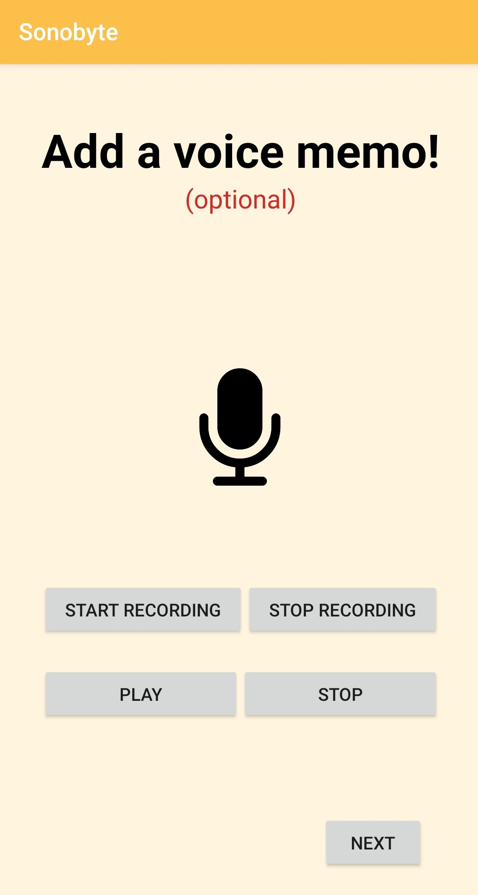
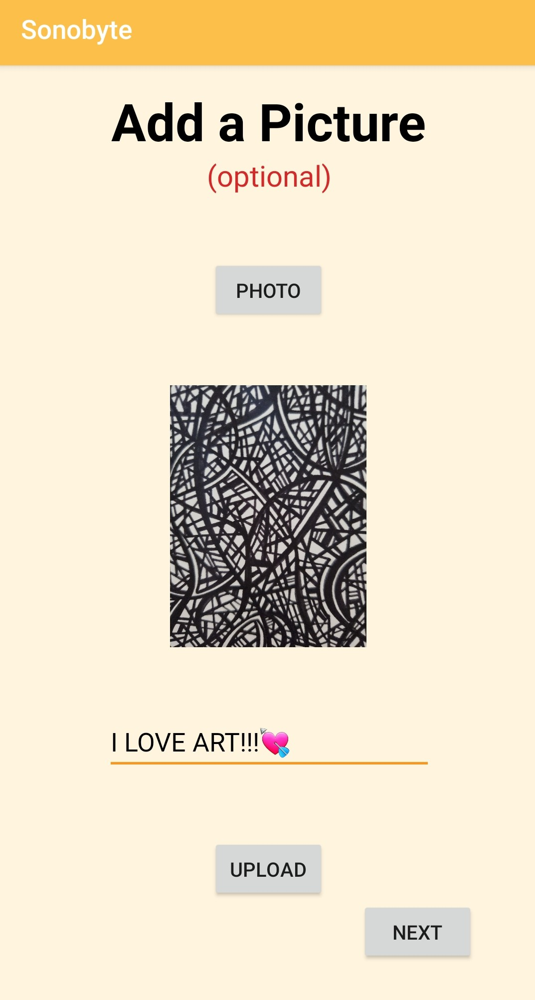
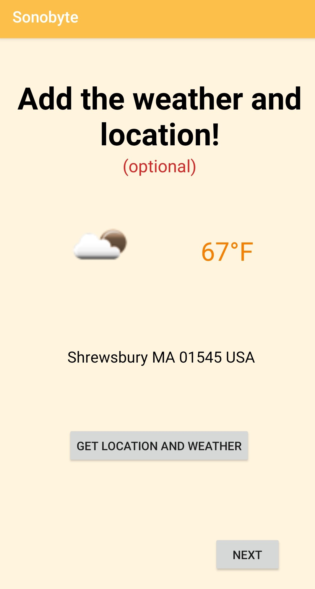
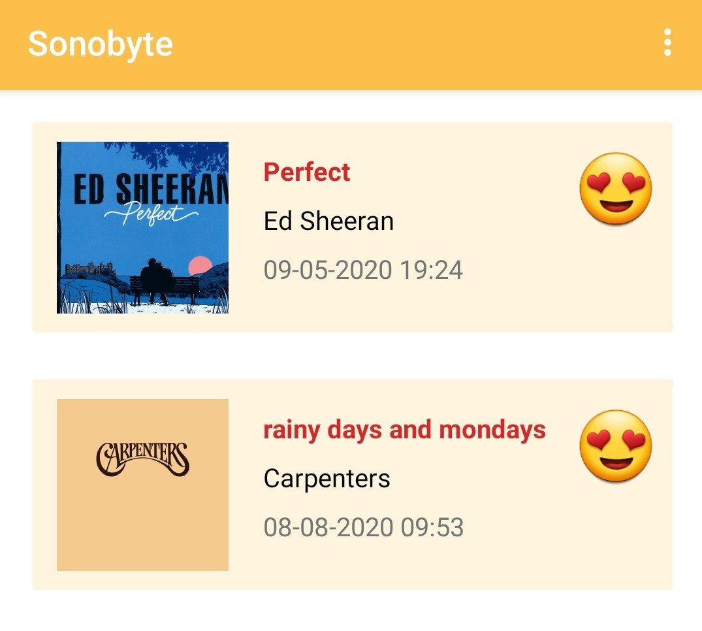
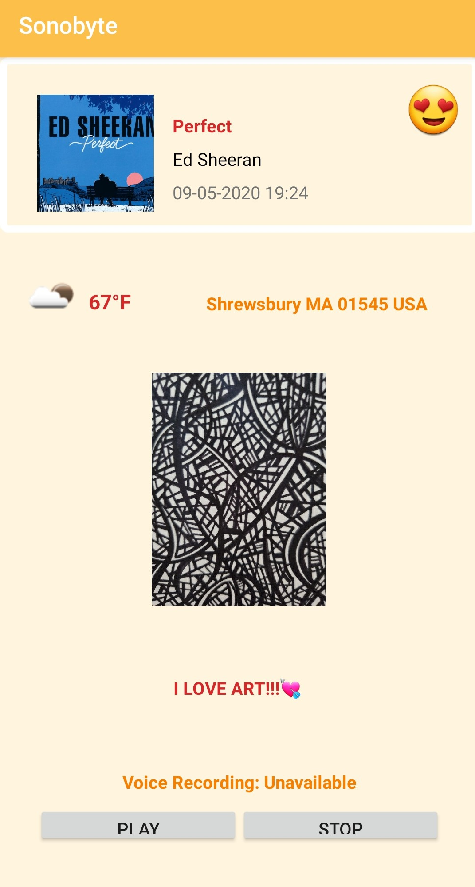

Sonobyte
My Role
User research, UI/UX Design, prototyping, app development
What is Sonobyte?
There are different types of “journaling”. One of them is “therapeutic journaling” that allows the writer to express their emotions, which ultimately may improve their mental and physical state. Studies have then shown that music has a lot of influence with memory retention associated with emotion.
Going through the Google Play Store and searching “journal”, you will be bombarded my hundreds, maybe even thousands of apps that anyone can download.
So why Sonobyte?
Sonobyte’s goal is to unify the use of music and emotion to enhance the journaling experience for the users to express themselves. Sonobyte has multiple features that would accomplish this.
The emotion of the user is recorded by allowing them to choose from 6 different emoji choices that connect their memory with that emotion.
A music choice also recorded by allowing the user to type in a song title and an artist that associates with the emotion they are feeling. This feature obtains information of the song and the artist from the MusicBrainz api database and allows a cover included in the post for visual enhancement.
The user has 3 other optional features that they can add to their post. Audio recording, adding photos and captions, and a location feature. The audio recorder allows the user to verbalize their emotions without the constrictions of screen size unlike other journaling app, which relies on typing. The camera feature allows the user to take a snapshot of their memory, while the caption option allows the inclusion of a text that describes the photo. The location feature, records the location where the memory occurred and the weather in that place during that moment.
  All of Sonobyte’s feature allows further enriching of memory retention by connecting their emotion to music and their memory.
 